機動警察パトレイバー
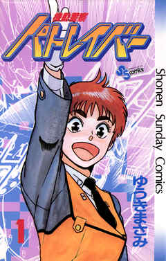 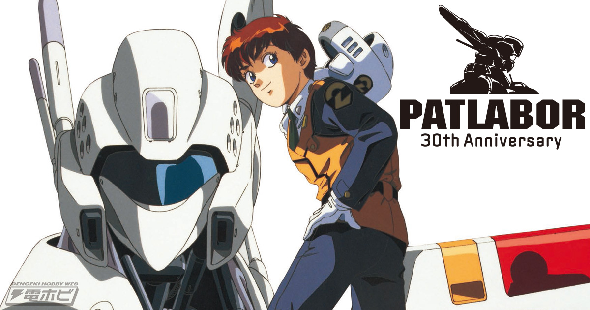作者 ゆうきまさみ
既刊情報 現在２０２０年１月 完結 全22巻/全11巻（ワイド版・文庫版）
この作品で一番好きなキャラクターは 後藤 喜一（ごとう きいち） です。
後藤 喜一とは、特車二課第二小隊長を務める警部補。オールバック、三白眼、エラハリ、無表情が特徴。傍目に悪人面だが見た目通り「悪党」。普段は飄々としたとらえどころのない昼行灯を装っているが、かつては公安出身の「カミソリ後藤」「本庁で有名な悪（ワル）」と呼ばれる切れ者だったことが過去を知る他の登場人物から語られている。全てにおいて無気力、無関心そうでいて、周囲への気配りはさりげなく行う。人的管理においては強制を好まず、各人の自主性を上手く引き出す方針が隊員たちにも伝わっているのか、人望はそれなりに厚い。漫画版では第二小隊全メンバーを事実上関係各所からスカウトし、自ら「ライトスタッフ」と認め、「ミスキャストがあったら監督は降板するぜ」と嘯くなど信頼を寄せている。平均年齢が低く未熟で純粋な部下たちについてはかなり気を回しており、慣れないフォローによる気苦労も多い。基本的に放任主義だが、必要に応じては凄みをきかせて従わせる。唯一同僚である南雲しのぶに対しては頭が上がらない面が目立ち、同時に高い信頼を持つ。
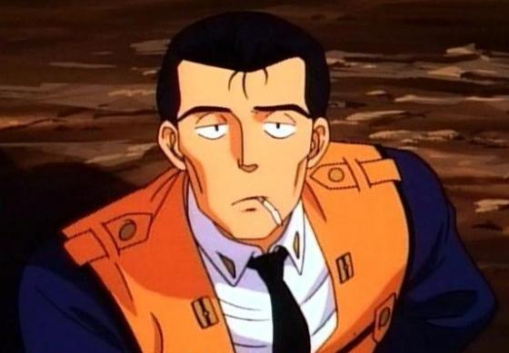
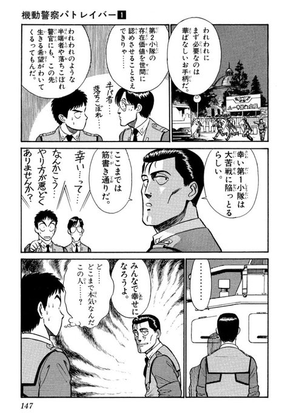
この作品は、僕が小さいときに父が持っていたDVDを見て好きになりました。主人公である特車二課第二小隊の面々が色々な事件を解決したりする作品です。
たまにあるギャグ多めの話がとっても面白いです！僕が好きなのはOVAアニメシリーズの黒い三連星という話です。
ロボットテクノロジーの発達によって登場した汎用多足歩行型作業機械レイバーが急速に普及し、軍事・民生を問わずあらゆる分野で使用されるようになった。
だがその結果、レイバーによる事故はもちろん、レイバーを使用した様々な犯罪行為が多発して社会問題となった。
この「レイバー犯罪」に対処するため、警視庁は新たに「特科車両二課中隊」、通称「特車二課」を設けた。これがパトロールレイバー、通称「パトレイバー」の誕生である。（wikiより一部抜粋）
物語は、若いパトレイバー隊員たちが葛藤しながら成長する青春群像であるほか、産業ドラマであり、陰謀ドラマでもある。これらが並行して展開されるストーリーとなっています。
レイバーとは、人間が操縦する「多足歩行型作業機械」ロボットのことです。
特車二課とは、「警視庁警備部特科（特殊）車両二課」が正式名称であるが、通称「特車二課」と呼ばれる。物語の中核となる組織であり、主人公、泉野明を始めとするキャラクター達が勤務している部署でもある。漫画版の説明によれば、当初は特科車両隊内の一中隊として「特機部隊」（中隊）が存在し、それが二個小隊体制になるにあたって特科車両隊から独立し、従来の特科車両隊を「特車一課」、レイバー隊を「特車二課」とするという説明がある。特車二課の棟屋は陸の孤島と言ってよい13号埋立地（1988年当時のお台場のイメージで、埋め立て作業が終わって養生中の埋立地）・初期OVA版では城南島の突端にある実在しない埋立地に建てられており、小隊の隊員達及び整備班の人間が勤務している。休憩時間には釣りや空き地に作った畑の手入れ、私物のオートバイで飲食物の買出しを行うなど、のどかな風景が描かれています。
アニメシリーズもOVA,New OVA、それと、普通のTV版があります。
シティハンター
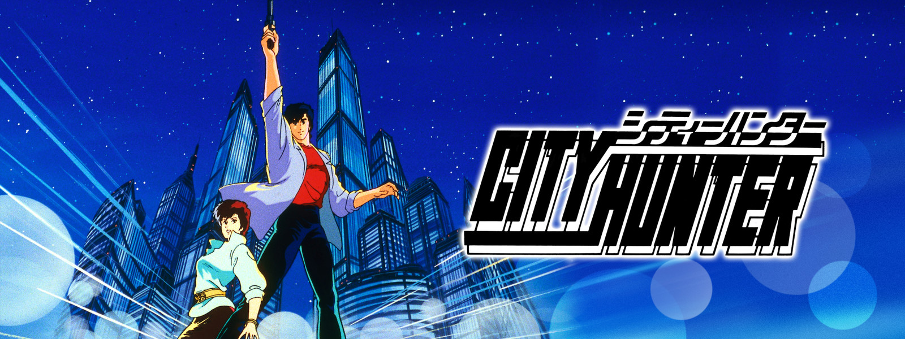 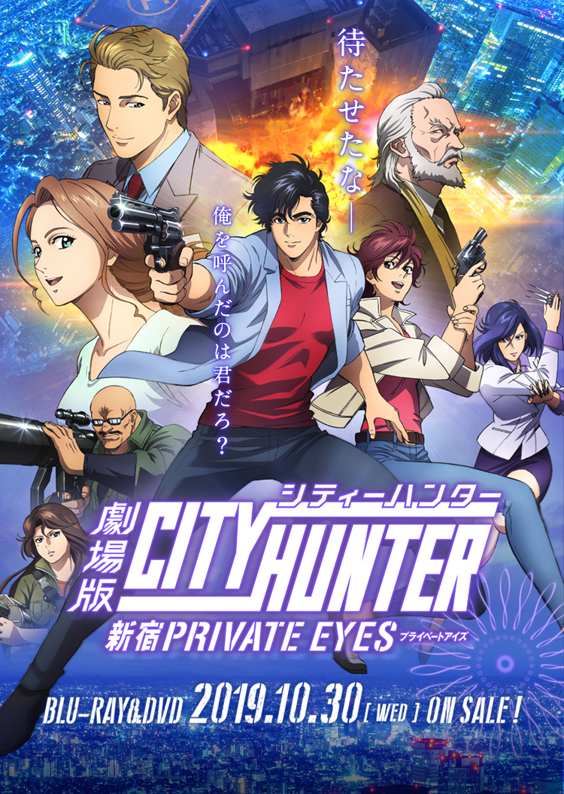作者 北条（ほうじょう） 司（つかさ）
既刊情報 現在2020年1月 完結 全35巻（JC）/全18巻（文庫）
この作品で一番好きなキャラクターは 本作の主人公である 冴羽 獠（さえば りょう） です。
冴羽 獠とは、本作の主人公。自称二十歳の青年（実年齢は不明）。新宿を拠点とし、活動しているプロのスイーパー（sweeper：始末屋）で、裏の世界でNo.1と呼ばれるほどの腕を持つ、通称「シティーハンター(City Hunter)」依頼方法は、新宿駅東口にある伝言板に「XYZ」の暗語と連絡方法を書き記す。同時に無類の女好きで、美女絡みか「心が震えた時」しか依頼を受けない。冴羽商事取締役社長。
長身に整った顔立ち、健康的な肌の色、バランスのよいスタイルである。黙っていればクールでニヒルな雰囲気さえも醸し出す。しかし、その魅力をぶち壊しにしかねないほどの比類なきスケベで、依頼人の女性に手を出そうとしては相棒の槇村香に天誅を食らっている。「新宿の種馬」、「新宿の一発狼」、「恐怖のもっこり男」の異名を持つ。基本的に美女絡みの依頼しか受けないポリシーを掲げているが、稀に「心を動かされる事情」があった場合、相手が男性であっても依頼を受ける。裏の世界ではほぼNo.1と言っても過言ではないほどの凄腕。飄々と、それでいて鋭く、法では裁けぬ悪を撃つ。その戦闘能力は、本気になれば「東京さえ壊滅できる」ほど。人間離れした性欲とともにかなりの巨根で、依頼人の女性に見られては驚かせることが多い。『アニメージュ』にて行われたアニメグランプリのキャラクター部門内の男性キャラクター部門において第11回、12回、13回と3回連続で第1位となっている。
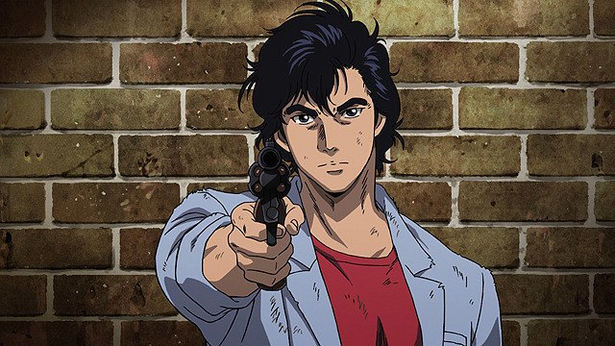
この作品は、僕が小学生の時に見たもので、主人公の冴羽 獠のカッコいいシーンに憧れていました。冴羽 獠の愛銃であるコルトパイソン357マグナムが拳銃の中では一番好きです。
作中では主人公の冴羽 獠が綺麗な女の人を見ると「もっこり」といいちょっかいをかけている。そのたびにパートナーである槇村 香（まきむら かおり）が100tハンマーで殴るなどの「天誅」を加えるのが定番。
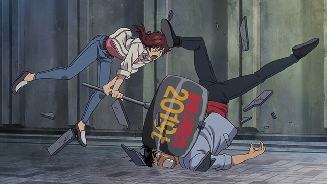
毎回起こる依頼人に獠が手を出すギャグシーンや依頼人を狙ってくる犯人との戦闘シーンがとっても面白い作品です。
ジャンプ1980年代を担ったヒット作ですが、少年誌への掲載としては内容がかなり大人向きのため単行本の売上とは裏腹に誌面での人気はさほど高くなかったようです。特に連載初期は正統派ハードボイルド色が極めて濃かったため人気が振るわなかった。このためテコ入れという形で、もう少し明るい作風にするという目的で「もっこりとかやっちゃったら？」という当時の担当編集者であった堀江信彦からのアドバイスを北条が真に受け、本当にもっこりを描いたことがきっかけで作風自体がコメディ色を色濃くしていき、結果的に人気作品へとなりました。
2019年には、「劇場版シティーハンター ＜新宿プライベート･アイズ＞」という映画が公開され２週間で観客動員数72万人、興行収入10億円の大台を突破しました。
勿論僕も、映画を見に行きました。とっても面白かったです！大勢人がいるのを見て、シティーハンターは何年たってもやっぱり人気作品なんだと思いました。
GS美神 極楽大作戦!!
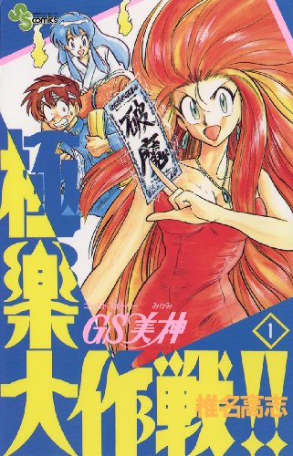 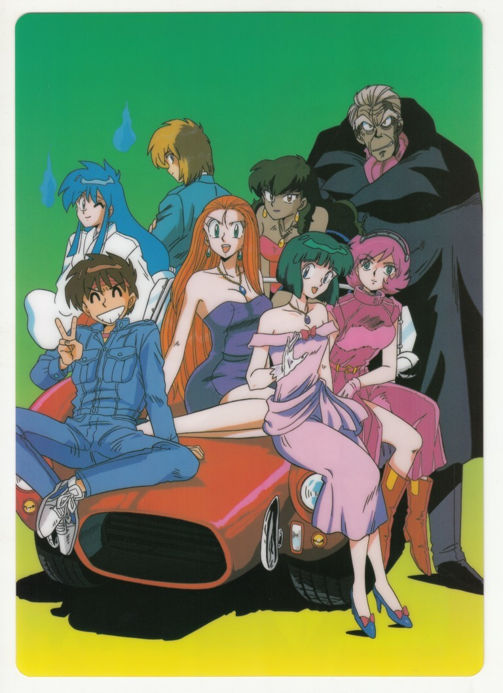 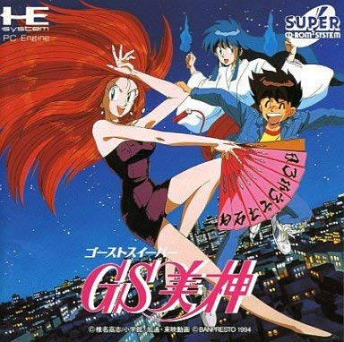作者 椎名（しいな） 高志（たかし）
既刊情報 現在２０２０年１月 完結 全39巻（旧版）/全20巻（ワイド版）
この作品で一番好きなキャラクターは 横島 忠夫（よこしま ただお）です。
横島 忠雄とは、アパートで下宿中に偶然見かけた美神の色香に迷い、超薄給かつ奴隷同然の待遇で、彼女の助手（アルバイト）を始める。頭に巻いているバンダナがトレードマーク。女性の姿形をしていれば神も人外もなく欲情する煩悩の塊。見境無くアタックやセクハラを繰り返し、しばしば美神の着替えや入浴を覗いては半殺しの目に遭う。一度激怒した美神に通報され、チカンで警察に逮捕されている。
どんな状況からも、「あー死ぬかと思った」と言いながら何事もなかったかのように帰還する（しかし大気圏突入を敢行した際には一時的な記憶喪失に陥った）。身体能力・反射神経ともに異常に高く、至近距離から撃たれた銃弾を見切り、「ゴキブリ並みの生命力」といわれるほど打たれ強い（普段から美神に折檻されているせいでもある）。
僕がこのキャラが好きな理由は、見た目は馬鹿で、変態なのにやるときはやるところが好きです。それに、女性たちにボコボコにされてるシーンが面白いからです。
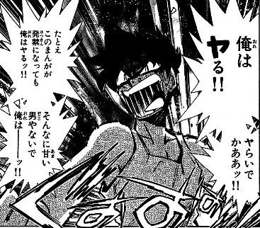
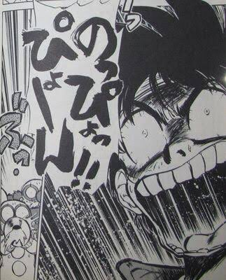
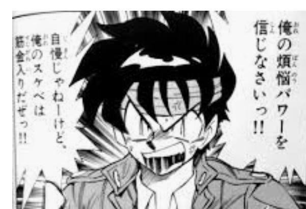
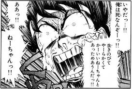
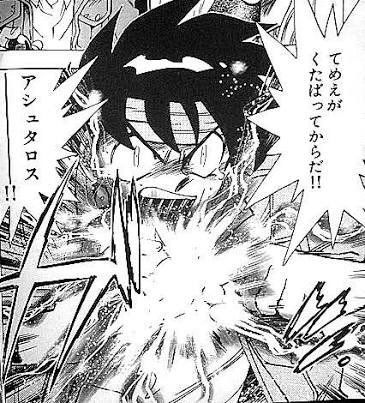
この作品は、僕が中学生の時にワイド版で読みました、最初は父が面白いからと買った作品だったのですが読んでみるととっても面白い作品で好きな作品になりました。
ストーリーは、悪霊や妖怪の退治を仕事とするGS（ゴーストスイーパー）の美神令子（みかみ れいこ）と助手の横島忠夫。己の欲望のまま動く二人と、まともだが幽霊のおキヌを中心とした日常のドタバタや、悪霊・妖怪との戦いを描くオカルトコメディです。
世界観は、主人公やその周辺人物だけが霊能力や幽霊、妖怪といったものを認知している一般的な霊能フィクションとは違い、そういった超常的な現象やそれらを鎮めたり除霊したりする霊能者の存在が世界で広く認知されている世界観となっています。また一部の妖怪等は人間と共存し、社会の中で受け容れられている。一方で、社会の基盤はあくまで科学であり、科学を基に幽霊や妖怪等の定義付けを行う事が難しい面もあって、その信憑性を問う声も存在している。 国際機関や各国家は上記の存在を認めており、国家によっては政治に大きな影響を及ぼしている。また除霊を行う霊能者はゴーストスイーパーと呼ばれ、国家資格制度が設けられ管理されています。
人間が暮らす人間界のほかに、神族などが住む天界（神界）や魔族などが住む魔界が存在しており、天界と魔界を合わせて冥界と呼んでいる。
神族と魔族の上層部は、ハルマゲドンを回避するためデタント状態にあり、最高神と魔王も親睦が深い様子。 しかし、世界を維持するために魔族は基本的に悪として神族や人間に負け続けなければならない役割を強制されているため、魔族の中には自分達が虐げられ続けなければならない状態に多かれ少なかれ疑念を持っている者も多く、中盤以降の物語の根幹に関わる問題となる。
主人公である美神玲子はプライドが高くワガママで傲慢な守銭奴で、神も悪魔も恐れないうえ極度の負けず嫌いかつ意地っぱりで、卑怯かつ外道な手段も嬉々として行い利己的・自己中心的である。そのため、敵のみならず味方からですら「傲慢」「性悪」「冷血」「悪魔より酷い」などと形容され、しばしば「クソ女」と評される。
信条は「現世利益 最優先」でお金に対する執着は人一倍強く、公務員のオカルトGメンに所属していた時は、薄給に耐えられずに発狂しかけたほど（ただし、プライドか金かどちらかを選択するかといえば、プライドの方を優先させるようである）。非常に高額な依頼料を取る一方で従業員への給料は極度に渋り（横島:時給250円から、おキヌ:日給30円から）、脱税の常習犯でもある。
次に紹介する、
あと、作者の次の作品である『絶対可憐チルドレン』（ぜったいかれんチルドレン）も好きです。